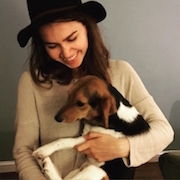
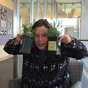

About Us
About Us
Cecelia Auerswald
I am a misfit from Olin college, majoring in Software Engineering and still trying to decide what on earth to do with the rest of my life. I like solving problems, talking to people (especially about books), baking, board games, walking silently through nature, storytelling, and theater. I’m from Washington, DC, yes, in the city, and hope to return there after I graduate, unless I magically find myself a subsistence farmer in the Scottish Highlands. That would do.
Izzy Harrison
Growing up in Santa Cruz, CA, I spent most of my youth at the beach or building swings in my front yard. I am majoring in Engineering with Sustainable design, graduating in 2019, and I hope to maybe find a job someday. I like to spend my free time backpacking extremely long distances, rock climbing and making Liege waffles.
John Mathai
 My mom swears aliens gave me to her. I have yet to decide on that statement’s validity. Human or not, I am an Environmental Engineering/Design major at Olin college. I like telling pointless stories, being witty, making people laugh (those last two only sometimes go hand in hand) and playing soccer. I am an adventurous old soul who has seen enough of the world to know I have seen very little of it. I aim to rectify that.
My mom swears aliens gave me to her. I have yet to decide on that statement’s validity. Human or not, I am an Environmental Engineering/Design major at Olin college. I like telling pointless stories, being witty, making people laugh (those last two only sometimes go hand in hand) and playing soccer. I am an adventurous old soul who has seen enough of the world to know I have seen very little of it. I aim to rectify that.
Harper Owen
Coming from a nerdy family in Santa Barbara, California, I’ve always had a love for building things and being in outdoors. Now on the East coast I’m enjoying the seasons change -- well, at least up until the winter -- and channeling my passions into mechanical design with a focus on sustainable engineering. In my free time I love to explore the Needham trail system, play ukulele (badly), and work through my grandmother’s cookbook.
Aditi Joshi
 I came to Olin by way of Richmond, VA, a city with a mix of cultures without a pure definition which has instilled this personality in me. I am a design major, but I call myself an engineer as much as an artist, writer, and theorist. When I’m not realizing how many things I don’t know about the world, I find myself drinking lattes, reading, watching movies, or cooking (probably some version of curry). I graduate in the Spring but please if you ever see me do not mention this fact or I’ll probably run away screaming from the future.
I came to Olin by way of Richmond, VA, a city with a mix of cultures without a pure definition which has instilled this personality in me. I am a design major, but I call myself an engineer as much as an artist, writer, and theorist. When I’m not realizing how many things I don’t know about the world, I find myself drinking lattes, reading, watching movies, or cooking (probably some version of curry). I graduate in the Spring but please if you ever see me do not mention this fact or I’ll probably run away screaming from the future.